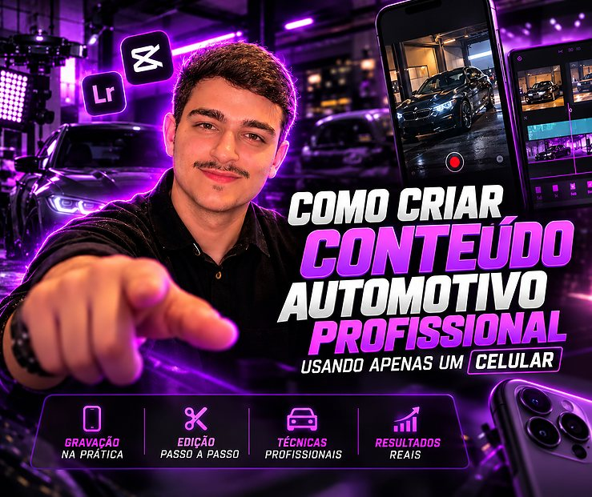
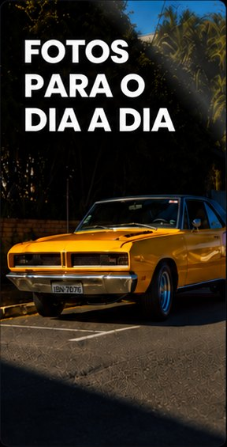
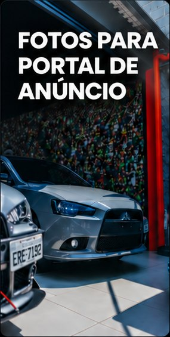
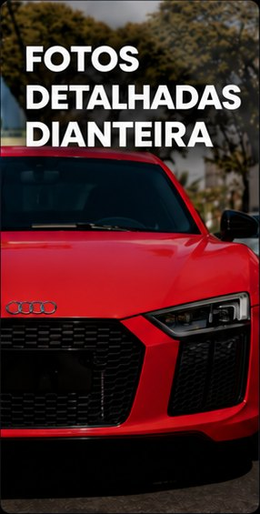
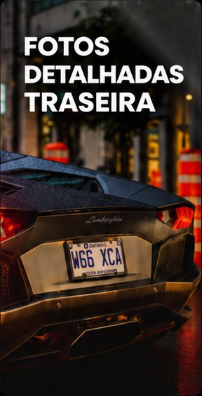
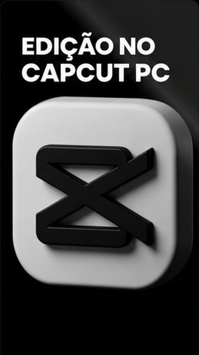
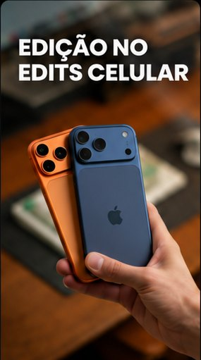
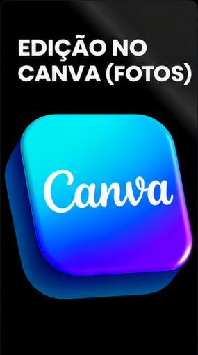
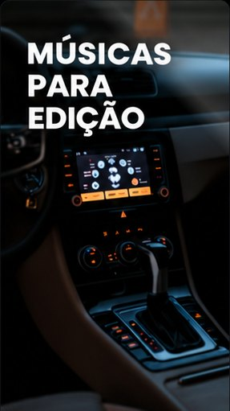
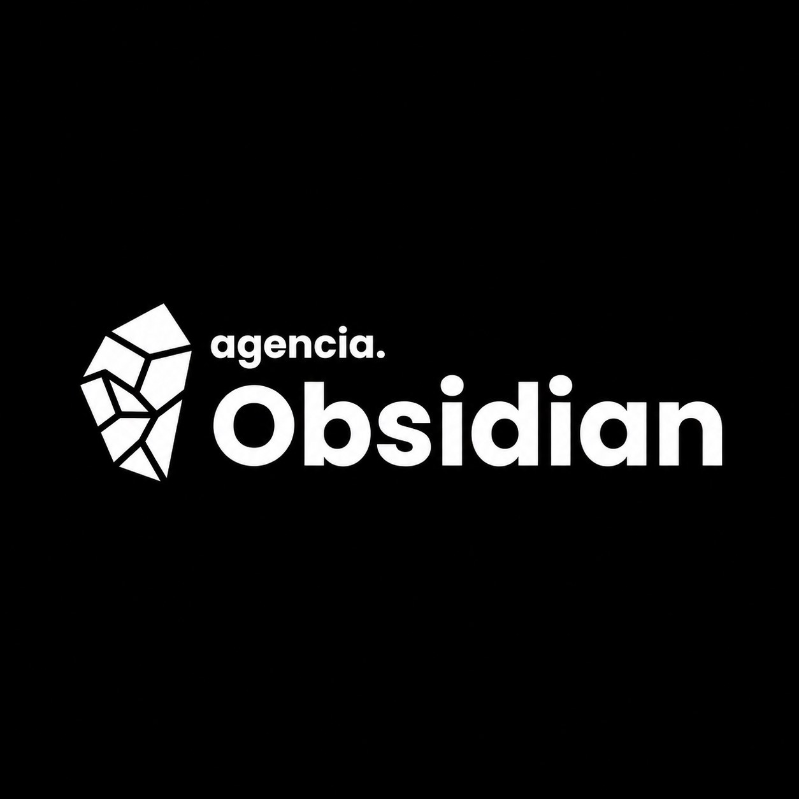

Curso
Conteúdo automotivo profissional com celular
Domine as técnicas de fotografia, filmagem e edição automotiva e aprenda a transformar gravações feitas com seu celular em conteúdos de qualidade profissional.
Aprenda com o curso
Mentoria
Acompanhamento Obsidian
Acompanhamento personalizado e feedbacks individuais para acelerar sua evolução.
Tenha orientação direta de quem já ultrapassou 10 milhões de visualizações, além de acesso a uma plataforma exclusiva com dezenas de aulas práticas.
Se inscrever na mentoria







Portfólio
Produção Obsidian
Separei alguns dos vídeos de carros que já produzi pra você dar uma olhada! Cada projeto tem um estilo diferente, mas todos têm o mesmo objetivo: valorizar cada detalhe do carro e criar vídeos que realmente chamam a atenção.
Conhecer portfólioServiços
Contrate a Obsidian
Se você trabalha no mercado automotivo e quer se destacar nas redes sociais, a gente pode te ajudar! Unimos criatividade, produção de vídeos profissionais e estratégias de marketing para fazer sua marca chamar a atenção e conquistar mais clientes.
Pedir um orçamento